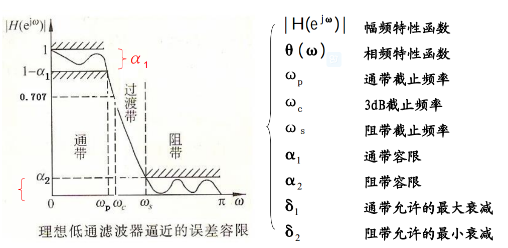
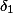
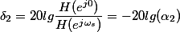
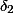
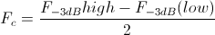
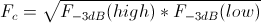
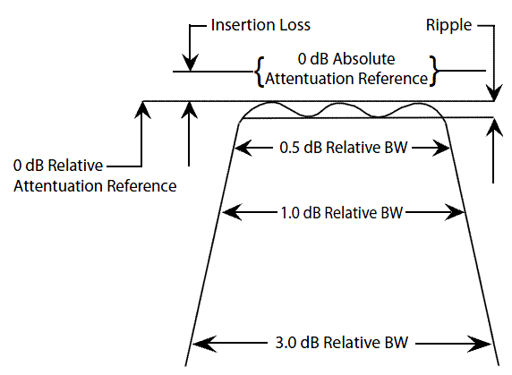
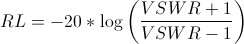

经典滤波器就是我们熟知的FIR和IIR，经典滤波器要求对输入信号的频率范围已知，从功能上可划分为：
低通滤波器（LPF）
高通滤波器（HPF）
带通滤波器（BPF）
带阻滤波器（BSF）
陷波滤波器（Notch Filter）
上面的图示是滤波器的增益曲线（Gain Curve）.
现代滤波器适用于__输入信号中含有混叠干扰频率__，常见的包括：
对于现代滤波器，有时间要一个个进行研究。
滤波器的技术指标通常是以频率响应的幅值特性（或者说上面提到的增益曲线）来表征，IIR很难实现线性相位，因此一般不考虑相位特性，若要求相位特性，则可使用FIR设计。
滤波器设计指标定义图
滤波器设计指标
在以上的指标中，往往使用衰减指标，滤波器衰减是指信号经过滤波器后信号强度的减少,专指信号功率幅度损失,等于20*log(输出功率/输入功率，单位为分贝(dB).
通带衰减
Passband
由图可知，越小滤波器性能越好，即越小越好。
Stopband
由图可知，越小滤波器性能越好，即越大越好。
若在处幅值H=0.707时，=3dB，则称为__3dB截止频率__。我们常说的__带宽__就是指3dB点间的频率宽度。
滤波器设计中的其它概念：
滤波器中心频率是指一个滤波器高低3dB频率间的中心频率，该中心频率可以是高低3dB频率的几何平均数或算术平均数。
算术平均数

几何平均数

品质因数通常是用来衡量电感或电容品质的参数，等于相应的电抗与电阻之比。在带通滤波器中，负载Q(Loaded Q)等于该带通滤波器的中心频率 与3dB带宽之比。
滤波器衰减纹波示意图

滤波器通带纹波是指在通带内衰减的波浪状变化,见上述滤波器衰减纹波释义图。滤波器产生的原因之一是由于负债不匹配。
滤波器反射损耗是指滤波器由于所接负载不匹配，由滤波器输出端反射回输入端的能量。滤波器反射损耗可用驻波比(VSWR)来定义，单位为分贝。 理想情况下，滤波器所接负载匹配即驻波比(VSWR)等于1，此时反射损耗为负无穷大分贝。

反射损耗的概念在射频电子电路设计中非常常见。
滤波器相对衰减指的是相对于零分贝，滤波器所产生的最小衰减。见上述滤波器衰减纹波释义图。
滤波器的实现即可以通过软件，也可以通过硬件实现。RC电路就是一种最简单的无源滤波器，通过改变RC电路结构能实现从低通到高通的一系列滤波器，使用FPGA设计滤波器也是一种常见的选择。软件上，通过在DSP或ARM上使用C或汇编编程也可实现FIR或IIR等滤波器。
[1] [滤波器设计(Filter Design)](http://www.probenotes.com/Notes/Filter/FilterIndex.html)
[2] 北京科技大学大学数字信号处理课程课件